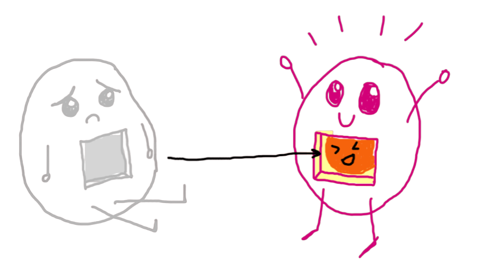

Deciphering C++'s move semantics
Deciphering C++'s move semantics
A (way too) simple model
Simple, right?
We either move...
...or we copy! (yay)
The silver bullet?
With move semantics :
- we never copy whole objects
- we know that the compiler will optimize our memory operations
- we actually move memory around (std::move ftw)
Not really...
With move semantics :
- we never copy whole objects
- we know that the compiler will optimize our memory operations
- we actually move memory around (std::move ftw)
It's not all as it seems
- Move semantics are only that, semantics
- They do not induce any inherent move operation
- They can also be quite dangerous if not used carefully (we shall see why)
lvalue reference, rvalue reference, oh my!
Most C++ programmers are familiar with the concept of "lvalue" and "rvalue"
- an lvalue is a "named value"
- an lvalue reference is a reference on an lvalue, indicated by &
- an rvalue is an "unnamed value"
- an rvalue reference is a reference on a rvalue, indicated by &&
Likely reaction to that information
No magic involved!!
If the concept seems trivial to you, it's because it is! Whether a reference is an lvalue-reference or rvalue-reference will only affect the overload resolution, and nothing else!
Caveat : constant lvalue references can bind to rvalues.
Illustration
Illustration
Illustration
Illustration
Let's see some code
Introductory example
Introductory example
Introductory example
Two copies. Copy elision can happen but is not guaranteed...
Introductory example
Maybe we can share the resource?
Introductory example
Maybe we can share the resource?
Introductory example
That's not really what we want though...
Introductory example
Introductory example
Introductory example
Introductory example
Introductory example
Warning : if you have not defined a move constructor/operator, the copy constructor/operator will be called
What is std::move, exactly?
Hmmm...
What is std::move, exactly?
Yeah, this one!
What is std::move, exactly?
What is std::move, exactly?
This is a valid implementation
Small interlude
Small interlude
What have we learned?
std::moveis not magic, it's a simple cast to rvalue reference- we implement the actual move ourselves, no compiler magic here!
What of PODs?
What of PODs?
How do you move such an object?
What of PODs?
How do you move such an object?
Remember, std::move will not actually move anything for you
Remember?
Remember?
Remember?
Remember?
So?
Where is the pointer to be moved here?
So?
Where is the pointer to be moved here?
No dice, moving won't do us good here...
Quiz time!
What is the output of each call?
Quiz time!
What is the output of each call?
Quiz time!
What is the output of each call?
Quiz time!
What is the output of each call?
Quiz time!
What is the output of each call?
Quiz time!
What is the output of each call?
Runnable demoQuiz time encore!
Quiz time encore!
Quiz time encore!
Wait, why?
It's in the name
We've got an rvalue-reference, meaning that :
- The value it's bound to is an rvalue, but it's not itself an rvalue
- An rvalue-ref binds to an rvalue, but it itself has a name, and is thus an lvalue
Let's move on...
Let's move on...
Learning to let go
To pass an rvalue reference to a function or method is to relinquish the ownership of the variable
Using a value after having "moved" it is called a use-after-move, and is undefined behavior
Learning to move on...

An actual depiction of a moved value
Performance...
Move semantics are often thought of as a tool for performance...
Ownership!
Move semantics are often thought of as a tool for performance...
While true, it's first and foremost an great tool to model ownership
std::auto_ptr and the 40 thieves
Once upon a time, there was a so-called smart pointer, bearing the modest, although nondescript name, of std::auto_ptr
Its story went a bit like that :
std::auto_ptr and the 40 thieves
In a real implementation, you'd use std::decay_t<T>*
std::auto_ptr and the 40 thieves
Without semantics, no way to express this transfer of ownership...
std::unique_ptr the gentleman thief
Clearly defined ownership transfer through semantics!
Although we cannot ensure no use after free...
What about...
What about...
We're actually breaking the RVO here...
RVO?
Return Value Optimization
- if a named lvalue is returned, the compiler will elide the copy and directy use the lvalue's memory
- if a value is initialized from a prvalue, the compiler will also elide the copy and directly use the prvalue's memory
- if no RVO can be used, the compiler is guaranteed to try to move the returned value
Using std::move on a returned value will always result in the worst case scenario, we're pessimistic!
Value Categories : prvalue, glvalue, xvalue...
Value Categories : prvalue
Focusing on prvalues:
A prvalue ("pure" rvalue) is an expression that initializes an object, often from the return of a function that are not lvalues (refs)
Copy elision
The name "copy elision" is actually fairly misleading. From the standard's point of view, in the cases where it applies, it means that no copy can possibly take place. So, in that sense, no copy is ever elided, no copy was ever supposed to exist.
However, compilers are not always fully standard compliant
Taking advantage of the RVOs
Taking advantage of the RVOs
GCC actually has a warning about "pessimizing moves" such as this one
To sum it up
| Return Statement | RVO | No RVO |
|---|---|---|
return foo |
no copy or move, memory reuse | guaranteed move |
return std::move(foo) |
IMPOSSIBLE! | explicit move |
rvalue refs and constness
rvalue refs and constness
The semantics here don't really make sense
Don't lie!
While it's technically valid C++, breaking the contract with our user is greatly discouraged
Move semantics are a tool to define ownership, so use it as such!
Main Takeways
- std::move is a cast, nothing else
- we don't actually move anything
- performance increase through "stealing" pointer to resources
- provide a way to define ownership through semantics
- std::move in a return statement is pessimizing
- beware of use-after-move!!!
- copies are not (necessarily) your enemy
Thank your for your attention!
Any question?